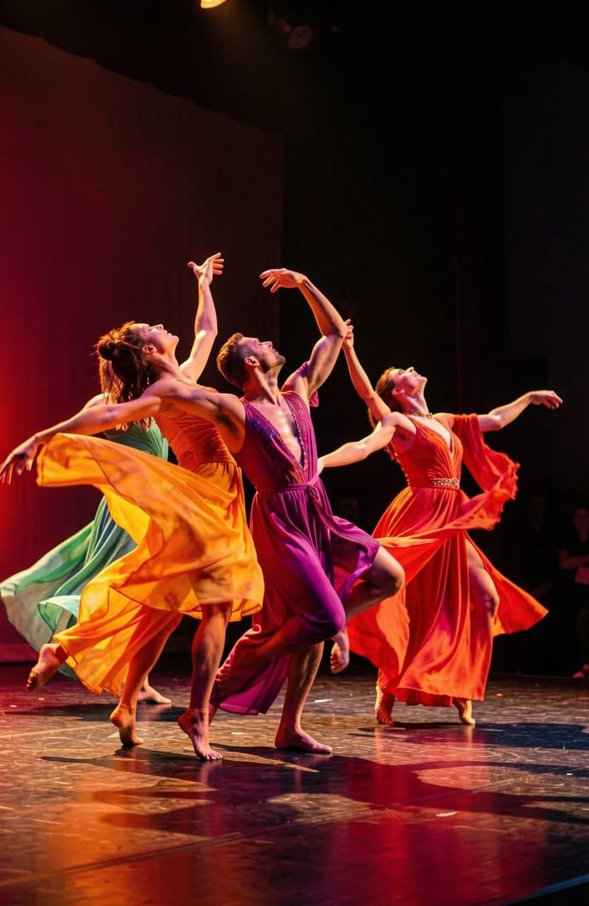

Early humans used rhythmic movement for spiritual rituals, rain worship, hunting preparations, and healing. Cave paintings in India and Egypt show some of the earliest records of dancing figures.
In Ancient Egypt, Greece, and Rome, dance became part of formal religious ceremonies, military training, and theatrical entertainment.
European royalty began hosting grand court dances. Ballet emerged in Italian courts and was formalized in France under King Louis XIV, creating structured techniques and choreography.
Rebellion against rigid ballet techniques led to Modern dance. Meanwhile, African and Caribbean influences mixed with European styles in the Americas, giving birth to Tap, Jazz, and Ballroom styles like the Waltz and Tango.
Hip-Hop culture emerged in New York City, bringing street styles like breaking and popping into mainstream pop culture. Today, digital media and global fusion styles continue to evolve dance rapidly.
Having the right equipment ensures safety, comfort, and fluidity during practice:
A balanced routine helps dancers build endurance and prevent injuries:
| Time | Activity | Focus Area |
|---|---|---|
| Morning (20 mins) | Stretching & Flexibility | Hamstrings, Hips, and Ankle Mobility |
| Afternoon (45 mins) | Technique & Footwork | Precision, Balance, and Rhythm |
| Evening (30 mins) | Free Choreography | Creativity, Musicality, and Flow |

just press the "⬅️" button when coming back to the web.